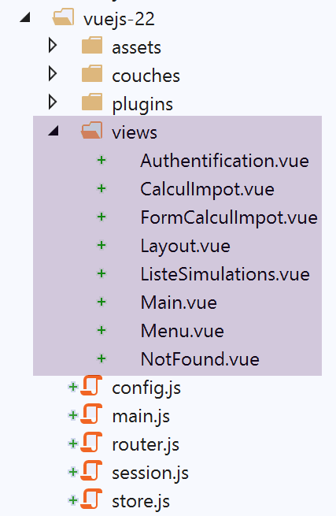

19. Miglioramenti al client Vue.js
19.1. Introduction
Testeremo il progetto [vuejs-21] con il server di sviluppo. Avremo quindi nuovamente bisogno che il server invii le intestazioni CORS. È quindi necessario che il file [config.json] della versione 14 del server di calcolo delle imposte consenta queste intestazioni:

Il progetto [vuejs-21] viene inizialmente creato duplicando il progetto [vuejs-20]. Successivamente viene modificato in [3].
Vengono generati nuovi file:
- [session.js]: esporta un oggetto [session] che incapsulerà le informazioni relative alla sessione corrente;
- [pluginSession]: rende disponibile l’oggetto [session] precedente nella proprietà [$session] delle viste;
- [NotFound.vue]: una nuova vista visualizzata quando l’utente richiede manualmente un URL che non esiste;
Verranno modificati i seguenti file:
- [main.js]: inizializzerà la sessione corrente e, quando l’utente digiterà manualmente un URL, la ripristinerà;
- [router.js]: vengono aggiunti controlli per gestire il caso in cui l’utente digiti URL;
- [store.js]: viene aggiunta una nuova mutazione;
- [config.js]: viene aggiunta una nuova configurazione;
- diverse viste, essenzialmente per salvare la sessione corrente in momenti chiave del ciclo di vita dell’applicazione. Questa viene poi ripristinata ogni volta che l’utente digita manualmente i codici URL;
19.2. Lo store [Vuex]
Lo script [./store] si evolve come segue:
// plugin Vuex
import Vue from 'vue'
import Vuex from 'vuex'
Vue.use(Vuex);
// store Vuex
const store = new Vuex.Store({
state: {
// la tabella delle simulazioni
simulations: [],
// il n. dell'ultima simulazione
idSimulation: 0
},
mutations: {
// eliminazione della riga n. indice
deleteSimulation(state, index) {
...
},
// aggiunta di una simulazione
addSimulation(state, simulation) {
...
},
// pulizia dello stato
clear(state) {
// Nessuna simulazione
state.simulations = [];
// la numerazione delle simulazioni ricomincia da 0
state.idSimulation = 0;
}
}
});
// esportazione dell'oggetto [store]
export default store;
- righe 24-29: la modifica [clear] elimina l’elenco delle simulazioni salvate e azzera il numero dell’ultima simulazione.
19.3. La sessione
La necessità di una sessione deriva dal fatto che quando l’utente digita un URL nel campo dell’indirizzo del browser, lo script [main.js] viene eseguito nuovamente. Tuttavia, quest’ultimo contiene l’istruzione:
// store Vuex
import store from './store'
Questa istruzione importa il seguente file [./store]:
// plugin Vuex
import Vue from 'vue'
import Vuex from 'vuex'
Vue.use(Vuex);
// archivio Vuex
const store = new Vuex.Store({
state: {
// la tabella delle simulazioni
simulations: [],
// il numero dell'ultima simulazione
idSimulation: 0
},
mutations: {
...
}
});
// esportazione dell'oggetto [store]
export default store;
Come si vede alle righe 7-13, viene importata una tabella di simulazioni vuota. Pertanto, se prima che l’utente digitasse URL nel campo dell’indirizzo del browser erano presenti delle simulazioni, in seguito non ce ne sarebbero più. L’idea è:
- utilizzare una sessione che memorizzi le informazioni che si desidera conservare se l’utente digita manualmente URL;
- salvarla in momenti chiave dell’applicazione;
- ripristinarla in [main.js], che viene sempre eseguito quando si digita manualmente un URL;
Lo script [./session] è il seguente:
// si importa lo store Vuex
import store from './store'
// si importa la configurazione
import config from './config';
// l'oggetto [session]
const session = {
// sessione avviata
started: false,
// autenticazione
authenticated: false,
// ora di salvataggio
saveTime: "",
// livello [métier]
métier: null,
// stato Vuex
state: null,
// salvataggio della sessione in una stringa jSON
save() {
// si aggiungono alcune proprietà alla sessione
this.saveTime = Date.now();
this.state = store.state;
// la si trasforma in jSON
const json = JSON.stringify(this);
// la si memorizza nel browser
localStorage.setItem("session", json);
// eslint-disable-next-line no-console
console.log("session save", json);
},
// ripristino della sessione
restore() {
// si recupera la sessione jSON dal browser
const json = localStorage.getItem("session")
// se è stato recuperato qualcosa
if (json) {
// si ripristinano tutte le chiavi della sessione
const restore = JSON.parse(json);
for (var key in restore) {
if (restore.hasOwnProperty(key)) {
this[key] = restore[key];
}
}
// se è trascorso un certo periodo di inattività dall'inizio della sessione, si ricomincia da zero
let durée = Date.now() - this.saveTime;
if (durée > config.duréeSession) {
// si svuota la sessione - verrà comunque salvata
session.clear();
} else {
// si rigenera lo store Vuex
store.replaceState(JSON.parse(JSON.stringify(this.state)));
}
}
// eslint-disable-next-line no-console
console.log("session restore", this);
},
// si pulisce la sessione
clear() {
// eslint-disable-next-line no-console
console.log("session clear");
// azzeramento di alcuni campi della sessione
this.authenticated = false;
this.saveTime = "";
this.started = false;
if (this.métier) {
// si reimposta il campo [taxAdminData]
this.métier.taxAdminData = null;
}
// viene svuotato anche lo store Vuex
store.commit("clear");
// si salva la nuova sessione
this.save();
},
}
// esportazione dell'oggetto [session]
export default session;
Commenti
- riga 2: la sessione incapsulerà anche lo store [Vuex] (elenco delle simulazioni, n. dell’ultima simulazione effettuata);
- righe 7-17: le informazioni conservate dalla sessione:
- [started]: la sessione jSON con il server è stata avviata o meno;
- [authenticated]: se l’utente si è autenticato o meno;
- [saveTime]: la data in millisecondi dell’ultimo salvataggio;
- [métier]: un riferimento al livello [métier]. Quest’ultimo contiene il dato [taxAdminData] che consente il calcolo dell’imposta;
- [state]: lo stato dello store [Vuex] (elenco delle simulazioni, numero dell'ultima simulazione effettuata);
- righe 20-30: il metodo [save] salva la sessione localmente sul browser che esegue l’applicazione;
- riga 22: si registra l’ora del salvataggio;
- riga 23: si recupera il [state] dallo store [Vuex];
- riga 25: si crea la stringa jSON della sessione;
- riga 27: viene memorizzata localmente sul browser associata alla chiave [session];
- righe 33-57: il metodo [restore] consente di ripristinare una sessione dal suo backup locale sul browser;
- riga 35: si recupera il backup locale jSON;
- riga 37: se è stato recuperato qualcosa;
- righe 39-44: l'oggetto [session] viene ricostruito;
- riga 46: si calcola il tempo trascorso dall’ultimo salvataggio;
- righe 47-50: se tale intervallo è superiore a un valore [config.duréeSession] definito in fase di configurazione, la sessione viene reinizializzata (riga 49) e, in tale occasione, salvata;
- riga 52: in caso contrario, si rigenera l’attributo [state] dello store [Vuex];
- righe 60-75: il metodo [clear] reinizializza la sessione;
- righe 64-70: le proprietà della sessione vengono reimpostate ai valori iniziali;
- riga 72: così come lo store [Vuex];
- riga 74: la nuova sessione viene salvata;
19.4. Il file di configurazione [config]
Il file [./config] si evolve come segue:
// utilizzo della libreria [axios]
const axios = require('axios');
// timeout delle richieste HTTP
axios.defaults.timeout = 2000;
...
// esportazione della configurazione
export default {
// oggetto [axios]
axios: axios,
// tempo massimo di inattività della sessione: 5 min = 300 s = 300000 ms
duréeSession: 300000
}
- riga 12: la sessione dell’applicazione verrà gestita in modo simile a una sessione web. Qui si imposta un tempo massimo di inattività di 5 minuti;
19.5. Il plugin [pluginSession]
Come già fatto numerose volte, il plugin [pluginSession] consentirà alle viste di accedere alla sessione tramite la proprietà [this.$session]:
export default {
install(Vue, session) {
// aggiunge una proprietà [$session] alla classe vista
Object.defineProperty(Vue.prototype, '$session', {
// quando viene fatto riferimento a Vue.$session, si imposta il secondo parametro su [session]
get: () => session,
})
}
}
19.6. Lo script principale [main]
Lo script principale [./main.js] viene modificato come segue:
// log di avvio
// eslint-disable-next-line no-console
console.log("main started");
// importazioni
import Vue from 'vue'
...
// istanziazione del livello [métier]
import Métier from './couches/Métier';
const métier = new Métier();
// plugin [métier]
import pluginMétier from './plugins/pluginMétier'
Vue.use(pluginMétier, métier)
// store Vuex
import store from './store'
// sessione
import session from './session';
import pluginSession from './plugins/pluginSession'
Vue.use(pluginSession, session)
// si ripristina la sessione prima del riavvio
session.restore();
// si ripristina il livello [métier]
if (session.métier && session.métier.taxAdminData) {
métier.setTaxAdminData(session.métier.taxAdminData);
}
// avvio dell'app UI
new Vue({
el: '#app',
// il router
router: router,
// la tenda Vuex
store: store,
// la schermata principale
render: h => h(Main),
})
// log di fine
// eslint-disable-next-line no-console
console.log("main terminated, session=", session);
- riga 19: si importa la sessione;
- riga 20: si importa il relativo plugin;
- riga 21: il plugin [pluginSession] viene integrato in [Vue]. Dopo questa istruzione, tutte le viste dispongono della sessione nel proprio attributo [$session];
- riga 27: la sessione viene ripristinata. La sessione importata alla riga 11 viene quindi inizializzata con il contenuto del suo ultimo salvataggio;
- dopo la riga 16, le viste dispongono di una proprietà [$métier] inizializzata alla riga 12. Questa proprietà non contiene l’informazione [taxAdminData] che consente di calcolare l’imposta;
- righe 30-32: se il ripristino appena effettuato ha ripristinato la proprietà [session.métier.taxAdminData], allora la proprietà [$métier] delle viste viene inizializzata con tale valore;
19.7. Il file di instradamento [router]
Il file di instradamento [./router] si evolve come segue:
// importazioni
import Vue from 'vue'
import VueRouter from 'vue-router'
// le viste
import Authentification from './views/Authentification'
import CalculImpot from './views/CalculImpot'
import ListeSimulations from './views/ListeSimulations'
import NotFound from './views/NotFound'
// la sessione
import session from './session'
// plugin di routing
Vue.use(VueRouter)
// le rotte dell'applicazione
const routes = [
// autenticazione
{ path: '/', name: 'authentification', component: Authentification },
{ path: '/authentification', name: 'authentification', component: Authentification },
// calcolo delle imposte
{
path: '/calcul-impot', name: 'calculImpot', component: CalculImpot,
meta: { authenticated: true }
},
// elenco delle simulazioni
{
path: '/liste-des-simulations', name: 'listeSimulations', component: ListeSimulations,
meta: { authenticated: true }
},
// fine sessione
{
path: '/fin-session', name: 'finSession'
},
// pagina sconosciuta
{
path: '*', name: 'notFound', component: NotFound,
},
]
// il router
const router = new VueRouter({
// le rotte
routes,
// modalità di visualizzazione di URL
mode: 'history',
// URL di base dell'applicazione
base: '/client-vuejs-impot/'
})
// verifica dei percorsi
router.beforeEach((to, from, next) => {
// eslint-disable-next-line no-console
console.log("router to=", to, "from=", from);
// percorso riservato agli utenti autenticati?
if (to.meta.authenticated && !session.authenticated) {
next({
// si passa all'autenticazione
name: 'authentification',
})
// ritorno al ciclo degli eventi
return;
}
// caso particolare di fine sessione
if (to.name === "finSession") {
// si pulisce la sessione
session.clear();
// si passa alla vista [authentification]
next({
name: 'authentification',
})
// ritorno al ciclo degli eventi
return;
}
// altri casi - vista successiva normale del routing
next();
})
// esportazione del router
export default router
Commenti
- righe 16-38: alcuni percorsi sono stati arricchiti con informazioni aggiuntive;
- riga 19: è stato creato un nuovo percorso per raggiungere la vista [Authentification];
- righe 21-24: il percorso che conduce alla vista [CalculImpot] ora ha una proprietà [meta] (questo nome è obbligatorio). Il contenuto di questo oggetto può essere qualsiasi e viene definito dallo sviluppatore;
- riga 23: si inserisce in [meta] la proprietà [authenticated] (il nome può essere qualsiasi). Ciò significa che, per accedere alla vista [CalculImpot], l’utente deve essere autenticato;
- righe 26-29: si procede allo stesso modo per il percorso che porta alla vista [ListeSimulations]. Anche in questo caso, l’utente deve essere autenticato;
- la proprietà [meta.authenticated] ci consentirà di verificare che un utente che digiti manualmente i valori URL delle viste [CalculImpot, ListeSimulations] non possa ottenerli se non è autenticato;
- righe 51-76: il metodo [beforeEach] viene eseguito prima che una vista venga instradata. È il momento giusto per effettuare delle verifiche;
- [to]: il percorso successivo se non si interviene;
- [from]: l'ultimo percorso visualizzato;
- [next]: funzione che consente di modificare il percorso successivo visualizzato;
- riga 55: si verifica se il percorso successivo richiede l’autenticazione dell’utente;
- righe 56-59: se sì e l’utente non è autenticato, si modifica il percorso successivo con la vista [Authentification];
- righe 64-73: si gestisce il caso particolare del percorso [finSession] delle righe 30-32. Questo non ha una vista associata;
- riga 66: si reimposta la sessione al suo valore iniziale;
- righe 68-70: si imposta la vista [Authentification] come vista successiva;
- riga 75: se non si verifica nessuna delle due condizioni precedenti, ci si limita a passare al percorso previsto dal file di instradamento;
- righe 35-37: si prevede una vista [NotFound] se la rotta digitata dall’utente non corrisponde a nessuna rotta nota. Questa vista viene importata alla riga 8. Le rotte vengono verificate nell’ordine del file di routing. Se quindi si arriva alla riga 36, significa che la rotta richiesta non è nessuna delle rotte delle righe 18-33;
19.8. La vista [NotFound]
La vista [NotFound] viene visualizzata se la rotta inserita dall’utente non corrisponde a nessuna rotta nota:

Il codice della vista è il seguente:
<!-- definizione HTML della vista -->
<template>
<!-- impaginazione -->
<Layout :left="true" :right="true">
<!-- avviso nella colonna di destra -->
<template slot="right">
<!-- messaggio su sfondo giallo -->
<b-alert show variant="danger" align="center">
<h4>Cette page n'existe pas</h4>
</b-alert>
</template>
<!-- menu di navigazione nella colonna di sinistra -->
<Menu slot="left" :options="options" />
</Layout>
</template>
<script>
// importazioni
import Layout from "./Layout";
import Menu from "./Menu";
export default {
// componenti
components: {
Layout,
Menu
},
// stato interno del componente
data() {
return {
// opzioni del menu di navigazione
options: [
{
text: "Authentification",
path: "/"
}
]
};
},
// ciclo di vita
created() {
// eslint-disable-next-line
console.log("NotFound created");
// si valuta quali opzioni di menu offrire
if (this.$session.authenticated && this.$métier.taxAdminData) {
// l'utente può effettuare simulazioni
Array.prototype.push.apply(this.options, [
{
text: "Calcul de l'impôt",
path: "/calcul-impot"
},
{
text: "Liste des simulations",
path: "/liste-des-simulations"
}
]);
}
}
};
</script>
Commenti
- riga 4: utilizza entrambe le colonne delle viste instradate;
- righe 6-11: un messaggio di errore;
- riga 13: il menu di navigazione occupa la colonna di sinistra;
- righe 31-36: le opzioni predefinite del menu;
- righe 40-57: codice eseguito quando viene creata la vista;
- riga 44: si verifica se l’utente può eseguire simulazioni;
- righe 45-55: in caso affermativo, si aggiungono due opzioni al menu di navigazione, quelle che richiedono l’autenticazione e la disponibilità di un livello [métier] operativo (righe 46-55);
19.9. La vista [Authentification]
La vista [Authentification] si evolve come segue:
<!-- definizione HTML della vista -->
<template>
<Layout :left="false" :right="true">
...
</Layout>
</template>
<!-- dinamica della vista -->
<script>
import Layout from "./Layout";
export default {
// stato del componente
data() {
return {
// utente
user: "",
// la sua password
password: "",
// controlla la visualizzazione di un messaggio di errore
showError: false,
// il messaggio di errore
message: ""
};
},
// componenti utilizzati
components: {
Layout
},
// proprietà calcolate
computed: {
// immissioni valide
valid() {
return this.user && this.password && this.$session.started;
}
},
// gestori di eventi
methods: {
// ----------- autenticazione
async login() {
try {
// inizio attesa
this.$emit("loading", true);
// non si è ancora effettuato l'autenticazione
this.$session.authenticated = false;
// autenticazione in attesa di risposta dal server
const response = await this.$dao.authentifierUtilisateur(
this.user,
this.password
);
// fine del caricamento
this.$emit("loading", false);
// analisi della risposta del server
if (response.état != 200) {
// viene visualizzato l'errore
this.message = response.réponse;
this.showError = true;
// ritorno al ciclo degli eventi
return;
}
// nessun errore
this.showError = false;
// autenticazione riuscita
this.$session.authenticated = true;
// --------- ora si richiedono i dati dell'amministrazione fiscale
// inizialmente, nessun dato
this.$métier.setTaxAdminData(null);
// inizio attesa
this.$emit("loading", true);
// richiesta in sospeso presso il server
const response2 = await this.$dao.getAdminData();
// fine del caricamento
this.$emit("loading", false);
// analisi della risposta
if (response2.état != 1000) {
// viene visualizzato l'errore
this.message = response2.réponse;
this.showError = true;
// ritorno al ciclo degli eventi
return;
}
// nessun errore
this.showError = false;
// i dati ricevuti vengono memorizzati nel livello [métier]
this.$métier.setTaxAdminData(response2.réponse);
// si può procedere al calcolo dell'imposta
this.$router.push({ name: "calculImpot" });
} catch (error) {
// si segnala l'errore al componente principale
this.$emit("error", error);
} finally {
// aggiornamento della sessione
this.$session.métier = this.$métier;
// si salva la sessione
this.$session.save();
}
}
},
// ciclo di vita: il componente è stato appena creato
created() {
// eslint-disable-next-line
console.log("Authentification created");
// L'utente può eseguire simulazioni?
if (
this.$session.started &&
this.$session.authenticated &&
this.$métier.taxAdminData
) {
// Allora l'utente può eseguire simulazioni
this.$router.push({ name: "calculImpot" });
// ritorno al ciclo degli eventi
return;
}
// se la sessione jSON è già stata avviata, non viene riavviata
if (!this.$session.started) {
// inizio attesa
this.$emit("loading", true);
// si inizializza la sessione con il server - richiesta asincrona
// si utilizza la promessa restituita dai metodi del livello [dao]
this.$dao
// si inizializza una sessione jSON
.initSession()
// si è ottenuta la risposta
.then(response => {
// fine attesa
this.$emit("loading", false);
// analisi della risposta
if (response.état != 700) {
// viene visualizzato l'errore
this.message = response.réponse;
this.showError = true;
// ritorno al ciclo degli eventi
return;
}
// la sessione è stata avviata
this.$session.started = true;
})
// in caso di errore
.catch(error => {
// l'errore viene segnalato alla vista [Main]
this.$emit("error", error);
})
// in ogni caso
.finally(() => {
// si salva la sessione
this.$session.save();
});
}
}
};
</script>
Commenti
- sono state evidenziate in giallo le istruzioni che utilizzano la sessione inserita in questa versione del client [Vue.js];
- righe 97, 148: alla fine dei metodi [login, created], la sessione viene salvata indipendentemente dal risultato delle query HTTP che si verificano in tali metodi (clausola [finally] in entrambi i casi);
- il metodo [created] delle righe 102-150 viene eseguito ogni volta che viene creata la vista [Authentification]. Se è stato l’utente a digitare il codice URL della vista, la sessione ci consentirà di sapere cosa fare;
- righe 106-115: se la sessione jSON è avviata, l’utente è autenticato e il dato [this.$métier.taxAdminData] è inizializzato, allora l’utente può accedere direttamente al modulo di calcolo dell’imposta (riga 112);
- riga 117: il metodo [created] veniva utilizzato nella versione precedente per inizializzare una sessione jSON con il server. Questa fase è superflua se è già stata eseguita;
- righe 42-66: il metodo di autenticazione;
- riga 66: se l’autenticazione va a buon fine, lo si registra nella sessione;
- righe 67-92: richiesta al server dei dati dell’amministrazione fiscale [taxAdminData];
- riga 95: al termine di questa fase, si aggiorna la proprietà [métier] della sessione, indipendentemente dal fatto che l’operazione abbia avuto esito positivo o meno;
19.10. La vista [CalculImpot]
Il codice della vista [CalculImpot] si evolve come segue:
<!-- definizione HTML della vista -->
<template>
...
</template>
<script>
// importazioni
import FormCalculImpot from "./FormCalculImpot";
import Menu from "./Menu";
import Layout from "./Layout";
export default {
// stato interno
data() {
return {
// opzioni del menu
options: [
{
text: "Liste des simulations",
path: "/liste-des-simulations"
},
{
text: "Fin de session",
path: "/fin-session"
}
],
// risultato del calcolo dell'imposta
résultat: "",
résultatObtenu: false
};
},
// componenti utilizzati
components: {
Layout,
FormCalculImpot,
Menu
},
// metodi di gestione degli eventi
methods: {
// risultato del calcolo dell'imposta
handleResultatObtenu(résultat) {
// si costruisce il risultato in sequenza HTML
...
// una simulazione di +
this.$store.commit("addSimulation", résultat);
// si salva la sessione
this.$session.save();
}
},
// ciclo di vita
created() {
// eslint-disable-next-line
console.log("CalculImpot created");
}
};
</script>
Commenti
- riga 45: la simulazione calcolata viene aggiunta allo store [Vuex]. Ciò ha un impatto sulla sessione che comprende la proprietà [state] dello store. Pertanto, si salva la sessione (riga 47);
- riga 51: si crea un metodo [created] per monitorare nei log la creazione delle viste;
19.11. La vista [ListeSimulations]
La vista [ListeSimulations] viene modificata come segue:
<!-- definizione HTML della vista -->
<template>
...
</div>
</template>
<script>
// importazioni
import Layout from "./Layout";
import Menu from "./Menu";
export default {
// componenti
components: {
Layout,
Menu
},
// stato interno
data() {
...
},
// stato interno calcolato
computed: {
// elenco delle simulazioni prelevate dallo store Vuex
simulations() {
return this.$store.state.simulations;
}
},
// metodi
methods: {
supprimerSimulation(index) {
// eslint-disable-next-line
console.log("supprimerSimulation", index);
// eliminazione della simulazione n. [index]
this.$store.commit("deleteSimulation", index);
// si salva la sessione
this.$session.save();
}
},
// ciclo di vita
created() {
// eslint-disable-next-line
console.log("ListeSimulations created");
}
};
</script>
Commenti
- riga 36: dopo l’eliminazione di una simulazione alla riga 34, si salva la sessione per tenere conto di questo cambiamento di stato;
- righe 40-43: si continua a seguire la creazione delle viste;
19.12. Esecuzione del progetto

Durante i test, verificare i seguenti punti:
- se l’utente «utilizza» l’applicazione tramite i link del menu di navigazione e i pulsanti/link di azione, questa funziona;
- se l’utente digita manualmente URL, l’applicazione continua a funzionare. Eseguite in particolare il seguente test:
- effettuare delle simulazioni;
- una volta nella vista [ListeSimulations], ricaricate (F5) la vista. Nell’applicazione precedente [vuejs-20], in quel caso si perdevano le simulazioni. Qui non è così: si ritrovano correttamente le simulazioni già effettuate;
- controllate i log per capire:
- in quale momento viene eseguito lo script [main]. Dovreste notare che viene eseguito ogni volta che l’utente digita manualmente un URL;
- in quali momenti vengono create le viste. Dovreste notare che vengono create ogni volta che stanno per essere visualizzate;
- il funzionamento del routing. Prima di ogni routing viene generato un log che indica:
- il percorso da cui si proviene;
- il percorso verso cui ci si sta dirigendo;
19.13. Distribuzione dell’applicazione su un server locale
Come esercizio, segui il paragrafo |Distribuzione su un server locale| per distribuire il progetto [vuejs-21] sul server Laragon locale. Quindi testalo.
19.14. Messa a punto della versione mobile
In teoria, l’uso di Bootstrap dovrebbe consentirci di avere un’applicazione utilizzabile su diversi dispositivi: smartphone, tablet, computer portatili e desktop. Ciò che differenzia questi dispositivi è la dimensione dello schermo.
Se si testa la versione [vuejs-21] su un dispositivo mobile, si nota che la visualizzazione delle viste è caotica. La versione [vuejs-22] corregge questo problema. Le modifiche sono state apportate tutte nei template delle viste. Consistevano essenzialmente nell’ottimizzare la visualizzazione per lo schermo di uno smartphone. Una volta ottimizzata, la visualizzazione su schermi di dimensioni maggiori avviene in modo fluido grazie a Bootstrap.

19.14.1. La vista [Main]
La vista [Main] si evolve come segue:
<!-- definizione HTML della vista -->
<template>
<div class="container">
<b-card>
<!-- jumbotron -->
<b-jumbotron>
<b-row>
<b-col sm="4">
<img src="../assets/logo.jpg" alt="Cerisier en fleurs" />
</b-col>
<b-col sm="8">
<h1>Calculez votre impôt</h1>
</b-col>
</b-row>
</b-jumbotron>
....
</b-card>
</div>
</template>
Commenti
- riga 8: dove prima c'era [cols=’4’], ora si scrive [sm=’4’]. [sm] significa [small]. Gli schermi degli smartphone rientrano in questa categoria. Le altre categorie sono [xs=extra small, md=medium, lg=large, xl=extra large];
- riga 11: idem;
19.14.2. La vista [Layout]
La vista [Layout] si evolve come segue:
<!-- definizione HTML del layout della vista instradata -->
<template>
<!-- riga -->
<div>
<b-row>
<!-- area a tre colonne a sinistra -->
<b-col sm="3" v-if="left">
<slot name="left" />
</b-col>
<!-- area a nove colonne a destra -->
<b-col sm="9" v-if="right">
<slot name="right" />
</b-col>
</b-row>
</div>
</template>
19.14.3. La vista [Authentification]
La vista [Authentification] si evolve come segue:
<!-- definizione HTML della vista -->
<template>
<Layout :left="false" :right="true">
<template slot="right">
<!-- modulo HTML - i valori vengono inviati tramite l'azione [authentifier-utilisateur] -->
<b-form @submit.prevent="login">
<!-- titolo -->
<b-alert show variant="primary">
<h4>Bienvenue. Veuillez vous authentifier pour vous connecter</h4>
</b-alert>
<!-- prima riga -->
<b-form-group label="Nom d'utilisateur" label-for="user" description="Tapez admin">
<!-- campo di immissione utente -->
<b-col sm="6">
<b-form-input type="text" id="user" placeholder="Nom d'utilisateur" v-model="user" />
</b-col>
</b-form-group>
<!-- seconda riga -->
<b-form-group label="Mot de passe" label-for="password" description="Tapez admin">
<!-- campo di inserimento password -->
<b-col sm="6">
<b-input type="password" id="password" placeholder="Mot de passe" v-model="password" />
</b-col>
</b-form-group>
<!-- terza riga -->
<b-alert
show
variant="danger"
v-if="showError"
class="mt-3"
>L'erreur suivante s'est produite : {{message}}</b-alert>
<!-- pulsante di tipo [submit] sulla terza riga -->
<b-row>
<b-col sm="2">
<b-button variant="primary" type="submit" :disabled="!valid">Valider</b-button>
</b-col>
</b-row>
</b-form>
</template>
</Layout>
</template>
Commenti
- righe 11 e 19: è stato rimosso l’attributo [label-cols] che impostava un numero di colonne per l’etichetta del campo di immissione. In assenza di questo attributo, l’etichetta si trova sopra il campo di immissione. Ciò si adatta meglio agli schermi degli smartphone;
19.14.4. La vista [CalculImpot]
La vista [CalculImpot] viene modificata come segue:
<!-- definizione HTML della vista -->
<template>
<div>
<Layout :left="true" :right="true">
<!-- modulo di calcolo delle imposte a destra -->
<FormCalculImpot slot="right" @resultatObtenu="handleResultatObtenu" />
<!-- menu di navigazione a sinistra -->
<Menu slot="left" :options="options" />
</Layout>
<!-- area di visualizzazione dei risultati del calcolo dell'imposta sotto il modulo -->
<b-row v-if="résultatObtenu" class="mt-3">
<!-- area vuota a tre colonne -->
<b-col sm="3" />
<!-- area a nove colonne -->
<b-col sm="9">
<b-alert show variant="success">
<span v-html="résultat"></span>
</b-alert>
</b-col>
</b-row>
</div>
</template>
19.14.5. La vista [FormCalculImpot]
La vista [FormCalculImpot] si evolve come segue:
<!-- definizione HTML della vista -->
<template>
<!-- modulo HTML -->
<b-form @submit.prevent="calculerImpot" class="mb-3">
<!-- messaggio su 12 colonne su sfondo blu -->
<b-row>
<b-col sm="12">
<b-alert show variant="primary">
<h4>Remplissez le formulaire ci-dessous puis validez-le</h4>
</b-alert>
</b-col>
</b-row>
<!-- elementi del modulo -->
<!-- prima riga -->
<b-form-group label="Etes-vous marié(e) ou pacsé(e) ?">
<!-- pulsanti di opzione su 5 colonne-->
<b-col sm="5">
<b-form-radio v-model="marié" value="oui">Oui</b-form-radio>
<b-form-radio v-model="marié" value="non">Non</b-form-radio>
</b-col>
</b-form-group>
<!-- seconda riga -->
<b-form-group label="Nombre d'enfants à charge" label-for="enfants">
<b-form-input
type="text"
id="enfants"
placeholder="Indiquez votre nombre d'enfants"
v-model="enfants"
:state="enfantsValide"
></b-form-input>
<!-- eventuale messaggio di errore -->
<b-form-invalid-feedback :state="enfantsValide">Vous devez saisir un nombre positif ou nul</b-form-invalid-feedback>
</b-form-group>
<!-- terza riga -->
<b-form-group
label="Salaire annuel net imposable"
label-for="salaire"
description="Arrondissez à l'euro inférieur"
>
<b-form-input
type="text"
id="salaire"
placeholder="Salaire annuel"
v-model="salaire"
:state="salaireValide"
></b-form-input>
<!-- eventuale messaggio di errore -->
<b-form-invalid-feedback :state="salaireValide">Vous devez saisir un nombre positif ou nul</b-form-invalid-feedback>
</b-form-group>
<!-- quarta riga, pulsante [submit] -->
<b-col sm="3">
<b-button type="submit" variant="primary" :disabled="formInvalide">Valider</b-button>
</b-col>
</b-form>
</template>
Commenti
- righe 15, 23, 35: è stato rimosso l'attributo [label-cols];
Inoltre, si stanno aggiornando i test di validità:
...
// stato interno calcolato
computed: {
// convalida del modulo
formInvalide() {
return (
// stipendio non valido
!this.salaire.match(/^\s*\d+\s*$/) ||
// o figli non validi
!this.enfants.match(/^\s*\d+\s*$/) ||
// o dati fiscali non disponibili
!this.$métier.taxAdminData
);
},
// convalida dello stipendio
salaireValide() {
// deve essere un numero >=0
return Boolean(
this.salaire.match(/^\s*\d+\s*$/) || this.salaire.match(/^\s*$/)
);
},
// convalida dei figli
enfantsValide() {
// deve essere un numero >=0
return Boolean(
this.enfants.match(/^\s*\d+\s*$/) || this.enfants.match(/^\s*$/)
);
}
},
...
Commenti
- riga 19: quando non è stato inserito nulla, l'inserimento viene considerato valido. Ciò consente di avere un inserimento valido quando la vista viene visualizzata inizialmente. Nella versione precedente, l'inserimento appariva inizialmente come errato;
- riga 26: idem;
- righe 5-14: il pulsante di convalida è attivo solo se entrambi i campi contengono un valore e sono validi;
19.14.6. La vista [Menu]
La vista [Menu] viene modificata come segue:
<!-- definizione HTML della vista -->
<template>
<b-card class="mb-3">
<!-- menu Bootstrap verticale -->
<b-nav vertical>
<!-- opzioni del menu -->
<b-nav-item
v-for="(option,index) of options"
:key="index"
:to="option.path"
exact
exact-active-class="active"
>{{option.text}}</b-nav-item>
</b-nav>
</b-card>
</template>
Commenti
- riga 3: si aggiunge il tag <b-card> per circondare il menu con un sottile bordo. Ciò consente di individuare meglio il menu sullo smartphone;
19.14.7. La vista [ListeSimulations]
La vista [ListeSimulations] rimane invariata:
<!-- definizione HTML della vista -->
<template>
<div>
<!-- impaginazione -->
<Layout :left="true" :right="true">
<!-- simulazioni nella colonna di destra -->
<template slot="right">
<template v-if="simulations.length==0">
<!-- nessuna simulazione -->
<b-alert show variant="primary">
<h4>Votre liste de simulations est vide</h4>
</b-alert>
</template>
<template v-if="simulations.length!=0">
<!-- ci sono simulazioni -->
<b-alert show variant="primary">
<h4>Liste de vos simulations</h4>
</b-alert>
<!-- tabella delle simulazioni -->
<b-table striped hover responsive :items="simulations" :fields="fields">
<template v-slot:cell(action)="data">
<b-button variant="link" @click="supprimerSimulation(data.index)">Supprimer</b-button>
</template>
</b-table>
</template>
</template>
<!-- menu di navigazione nella colonna di sinistra -->
<Menu slot="left" :options="options" />
</Layout>
</div>
</template>
Commenti
- riga 20: si noti l’attributo [responsive] che fa sì che la visualizzazione della tabella si adatti alle dimensioni dello schermo:

- in [2], sugli schermi di piccole dimensioni, una barra di scorrimento orizzontale consente di visualizzare la tabella;
19.14.8. La vista [NotFound]
rimane invariata.
19.14.9. Le visualizzazioni su dispositivi mobili


Nota: sicuramente è possibile ottenere visualizzazioni ancora più adatte ai dispositivi mobili. Penso in particolare al menu di navigazione, che potrebbe essere migliorato, ma ci sono anche altri aspetti da considerare. L’obiettivo principale di questo documento non era la creazione di un’applicazione mobile. In tal caso, forse ci saremmo orientati verso un framework come Ionic |https://ionicframework.com/|.